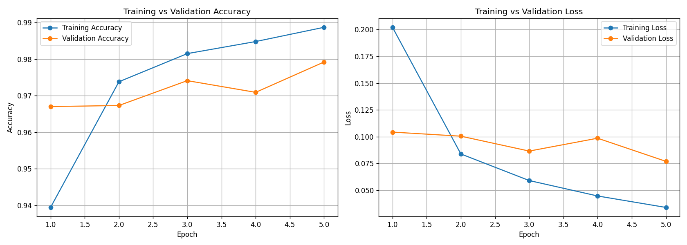
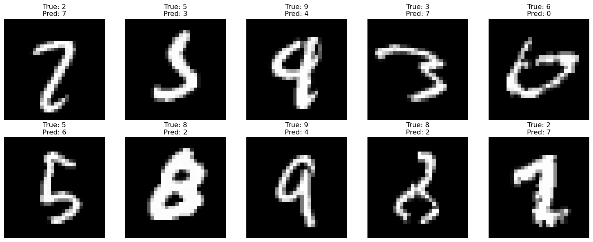

MNIST Digit Classification
Deep Learning Case Study
Building and optimizing a neural network with TensorFlow and Keras to recognize handwritten digits.
← Back to Portfolio60K
Training Images
10K
Testing Images
10
Classes
89.6%
Test Accuracy
Project Overview
This project uses the MNIST handwritten digit dataset to train a fully connected neural network. The goal was to explore the complete deep learning workflow, including preprocessing, model design, training, evaluation, and hyperparameter tuning.
Technologies
Python
TensorFlow
Keras
NumPy
Matplotlib
Workflow
Preprocessing
- Normalized pixel values
- Flattened 28×28 images
- One-hot encoded labels
Model
- Dense (256) + ReLU
- Dense (128) + ReLU
- Softmax output layer
Training
- Adam optimizer
- EarlyStopping
- ModelCheckpoint
- Validation split
Results
The final model achieved approximately 89.6% test accuracy. Multiple experiments with optimizers, callbacks, and regularization techniques were performed to improve generalization and reduce overfitting.
Project Gallery
Replace the filenames below with your screenshots.




Lessons Learned
- Data preprocessing is critical for neural network performance.
- EarlyStopping helps prevent overfitting.
- ModelCheckpoint preserves the best-performing model.
- Hyperparameter tuning improves model generalization.
Future Improvements
- Convolutional Neural Networks (CNNs)
- Data augmentation
- Learning rate scheduling
- More architecture experiments